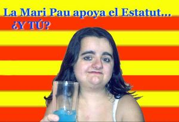

Estatut
 De: La Frikipedia, la enciclopedia extremadamente seria.
De: La Frikipedia, la enciclopedia extremadamente seria.
 Fuente: Campaña de propaganda del Estatut.
Se trata de un documento bastante controvertido que ha dividido a la sociedad catalana en dos:
- Por un lado están los que prefieren que se edite con tapa de cuero rojo y título dorado escrito a mano.
- En cambio, una ligera mayoría prefiere que se edite en formato de libro de bolsillo y con código fuente Comic Sans MS.
En lo que respecta a su contenido, todos los catalanes están de acuerdo, sus puntos más importantes son los siguientes:
- Todos los catalanes tienen derecho a un flan al dia, a poder ser de vainilla.
- Es absolutamente legal atracar, siempre que éste acto se realice con cuchillas de afeitar (excepto las de la marca Gillete, porque las promociona Beckham).
- Todos los catalanes varones tienen el deber de sacudirsela tras miccionar. Las sanciones por incumplir esta ley son aleatorias, pudiendo tratarse por ejemplo, de la lapidación pública, la retirada indefinida del carnet de conducir o el llevar durante 3 meses la camiseta del Yokohama Marinos.
- Los "Mossos d'Esquadra" serán reemplazados progresivamente por jarrones greco-romanos, de igual utilidad pero de mayor grado decorativo.
- Dalí y Gaudí serán condecorados con la medalla al mérito deportivo (el único requisito imprescindible para que te den este premio en Cataluña es que tu primer apellido acabe en "í", y si lo desean tendrán un puesto de trabajo como funcionarios en las oficinas del INEM.
- También pone no se qué de autofinanciación y mas mierdas de esas que a nadie le interesa, pero es que tuvieron que ponerlo para poder llegar a las 1.052 páginas, número favorito de Carod Rovira.
Dícese de un pedazo de papel (o PenDrive) con palabras que provoca ciertas emociones por toda la peninsula ibérica: Ira, rabia, furia, odio, desmembración... y que tiene el mérito junto con el Plan Ibarretxe de ser papel "anticonstitucional", sin haber aun cruzado la puerta del parlamento.
Fue pactado en Perpinyà por Carod-Rovira, Bin Laden, Oleguer Presas, Josu Ternera, Saddam, Samuel Eto'o, Ronaldinho, Maragall, Zapatero, Hugo Chávez así como el mismísmo Belcebuth. En él se recogen lo que se ha denominado "el pacto de Perpiñán" en el que se recoge:
- el 0-3 del Barça en el Bernabéu con aplastamiento así como la lesión de Raúl.
- El incendio del Windsor
- La sequía e incendios del verano
- La victoria de Dani Pedrosa
- Leo Messi
- la derogación del PHN
- La desmembración de España en diferentes islas formando así el archipiélago ibérico.
- Que el futuro heredero de España fuese niña y la mujer de Felipe fuese una divorciada
Otros proyectos pendientes
Estatut de Cataluña, que se declara Nación (Realizado)Estatuto de Andalucía, que se declara Realidad Nacional Estatuto de Valencia, que se declara Imperio Sacro- Estatuto de Asturias, que se declara Reino
- Estatuto de Madrid, que se declara Imperio Independiente
- Marina d'Or se declara estrella de la muerte y ciudad de vacaciones bajo el reinado de Anna Igartiburu (Chafum)
- Orozco
- Euskadi por medio del Plan Ibarretxe declara al resto del mundo suburbios chungos de Bilbao
Autor(es):
- Krusher
- Minipimer
- Kai
- Radiobishop
- Simoman
- Jowsh
- Aque
- Thanat0s
- Marc CAT
- Alex2610
Frikipedia 2005-2016, Licencia
GFDL 1.2 - Extraído por FrikiLeaks